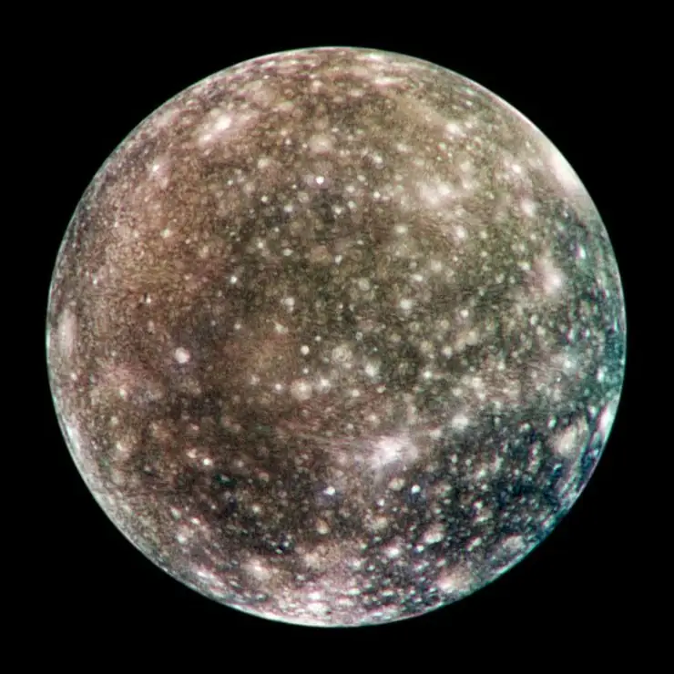

Calisto - Lua de Júpiter

Introdução e História
Calisto é a segunda maior lua de Júpiter e a terceira maior do Sistema Solar, com um tamanho semelhante ao do planeta Mercúrio. Ela faz parte do grupo das luas galileanas, ao lado de Io, Europa e Ganimedes.
A lua foi descoberta em 7 de janeiro de 1610 por Galileo Galilei, durante suas primeiras observações telescópicas de Júpiter. Essa descoberta teve grande importância histórica, pois ajudou a demonstrar que nem todos os corpos celestes orbitam a Terra.
Calisto se destaca por possuir uma das superfícies mais antigas e crateradas do Sistema Solar. Diferente de outras luas de Júpiter, ela apresenta pouca atividade geológica, o que permitiu a preservação de sua superfície ao longo de bilhões de anos.
Características Físicas: Diâmetro, Massa e Órbita
Calisto possui cerca de 4.821 km de diâmetro, sendo apenas um pouco menor que o planeta Mercúrio.
Ela orbita Júpiter a uma distância média de aproximadamente 1.883.000 km, completando uma volta ao redor do planeta em cerca de 16,7 dias terrestres.
Sua composição é uma mistura de gelo de água e rocha, com uma estrutura interna relativamente simples.
Geologia
A geologia de Calisto é marcada por uma superfície extremamente antiga e fortemente craterada, indicando que a lua sofreu poucos processos de renovação ao longo de sua história.
Diferente de luas como Io ou Europa, Calisto não apresenta sinais claros de vulcanismo, tectônica ativa ou placas de gelo em movimento. Isso sugere uma baixa quantidade de calor interno e pouca atividade geológica.
Apesar disso, dados coletados pela sonda Galileo indicam a possível existência de um oceano subterrâneo salgado sob a crosta de gelo. Esse oceano estaria profundamente enterrado e isolado, o que explica a ausência de manifestações geológicas na superfície.
Missões Espaciais
Calisto foi observada por diversas missões espaciais importantes desde o início da exploração do Sistema Solar. As sondas Voyager 1 e 2, durante seus sobrevoos no final da década de 1970, forneceram as primeiras imagens detalhadas da lua.
Mais tarde, a missão Galileo, que orbitou Júpiter entre 1995 e 2003, revelou informações cruciais sobre a composição da superfície, a estrutura interna e a possível presença de um oceano subterrâneo.
Missões futuras, como a JUICE (Jupiter Icy Moons Explorer) da Agência Espacial Europeia, devem aprofundar o estudo das luas geladas de Júpiter, incluindo Calisto, ampliando nosso entendimento sobre seu ambiente e potencial científico.
Atmosfera e Exosfera
Calisto não possui uma atmosfera densa como a da Terra. Em vez disso, apresenta uma exosfera extremamente tênue, composta principalmente por dióxido de carbono, além de traços de oxigênio.
Essa exosfera é tão rarefeita que as partículas dificilmente colidem entre si, o que impede a formação de nuvens, ventos ou fenômenos climáticos.
A presença desses gases está relacionada à liberação de partículas da superfície gelada, causada pela radiação e pelo impacto de micrometeoritos.
Potencial de Habitabilidade
- 💧 Água Líquida: Evidências indiretas sugerem a existência de um oceano subterrâneo sob a crosta de gelo.
- ⚡ Fonte de Energia: Muito limitada, já que Calisto apresenta pouca atividade geológica interna.
- 🧬 Ingredientes Químicos: Presença de água, sais e compostos básicos, mas com baixa interação química.
Embora o ambiente não seja considerado ideal para a vida, Calisto permanece como um objeto de interesse científico na busca por condições habitáveis fora da Terra.
Curiosidades
A superfície de Calisto é uma das mais antigas e preservadas do Sistema Solar, funcionando como um verdadeiro registro histórico de impactos cósmicos.
Entre as luas galileanas, ela é a menos exposta à intensa radiação de Júpiter, o que a torna um ambiente relativamente mais estável.
Por essa razão, Calisto já foi considerada um possível local para futuras bases humanas, especialmente como ponto de apoio para a exploração do sistema joviano.
Origem do Nome
O nome Calisto tem origem na mitologia grega e está ligado a uma das histórias mais trágicas e simbólicas associadas a Zeus. Calisto era uma ninfa da Arcádia e seguidora de Ártemis, deusa da caça, que exigia de suas companheiras um voto de castidade.
Segundo o mito, Zeus se apaixonou por Calisto e, disfarçando-se, acabou seduzindo-a. Ao descobrir a gravidez da ninfa, Hera, esposa de Zeus, tomada pelo ciúme, puniu Calisto transformando-a em uma ursa.
Anos depois, o filho de Calisto, Arcas, quase matou a própria mãe durante uma caçada, sem reconhecê-la. Para evitar a tragédia, Zeus interveio e colocou ambos no céu: Calisto tornou-se a constelação da Ursa Maior, enquanto Arcas se tornou a Ursa Menor.
O nome da lua segue a tradição de batizar os satélites de Júpiter com personagens ligados a Zeus, reforçando a conexão entre mitologia, astronomia e a tentativa humana de compreender o cosmos.
Referências
- NASA. Callisto Overview. Disponível em: https://solarsystem.nasa.gov/moons/jupiter-moons/callisto/overview/ . Acesso em: 26 dez. 2025.
- Britannica. Callisto (moon). Disponível em: https://www.britannica.com/place/Callisto-satellite-of-Jupiter . Acesso em: 26 dez. 2025.
- Wikipedia. Calisto (satélite). Disponível em: https://pt.wikipedia.org/wiki/Calisto_(sat%C3%A9lite) . Acesso em: 26 dez. 2025.